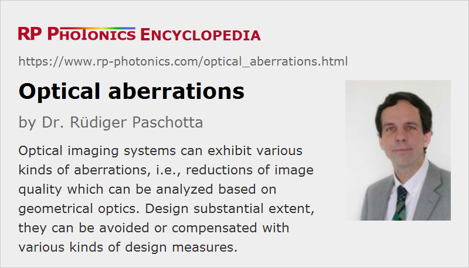

Optical Aberrations
Definition: degradations of optical images caused in imaging instruments
More specific terms: defocus, astigmatism, coma, spherical aberrations, chromatic aberrations
German: optische Aberrationen
Categories: general optics, vision, displays and imaging
How to cite the article; suggest additional literature
Author: Dr. Rüdiger Paschotta
Many optical instruments such as photo cameras, telescopes and microscopes involve some kind of optical imaging. Ideally, the produced optical images would have the following properties, as obtained within Gaussian optics:
- There is an exact correspondence between object points and image points, where every object point is precisely imaged to one point. In other words, one obtains perfectly sharp images.
- At least for object points in one plane, images would not exhibit any geometric distortions. For example, a square region would always be imaged to a square region, having exactly straight boundaries.
- There would be no wavelength (color) dependence of the imaging properties.
Such ideal performance can in practice never be reached for various reasons:
- Diffraction of light sets a limit to the possible image resolution. An infinitely small point on the object, for example, is always imaged to an area of finite size (described by the point spread function).
- Various properties of an imaging system cause different kinds of optical aberrations – image imperfections which can be analyzed with geometrical optics (ray optics). These can occur even if the optical parts perfectly adhere to the specifications, e.g. with perfectly spherical surfaces.
- There can be imperfections of optical elements, which further add aberrations. For example, an aspheric lens based on cheap plastic optics may have an imperfect shape.
An essential part of the design of optical instruments is the minimization of aberrations. This is true particularly for imaging systems, while illumination systems are often not critical in this respect.
Aberrations are also often relevant for the achievable beam quality of lasers. For example, thermal lenses in laser crystals often exhibit substantial aberrations.
As mentioned above, optical aberrations are usually analyzed based on pure ray optics (not considering wave aspects). As a reference, one usually uses beam paths, focus positions etc. based on the paraxial approximation; aberrations are considered as deviations from those, while deviations of the actual physical behavior due to the wave aspects of light (e.g. diffraction) are not considered as aberrations. The latter are also often weaker than the aberrations in the explained sense.
The theory of optical aberrations is rather complicated, involving many non-trivial geometrical considerations and a considerable amount of mathematics. Unfortunately, various aspects, including even quite fundamental ones, are often presented in misleading or even contradictory ways. For example, it is not consistent to define aberrations only via not perfectly sharp images (for any physical reasons, and ignoring geometrical distortions) and at the same time as departures from the behavior based on paraxial optics. A comprehensive understanding requires detailed studies. This article only gives a very brief overview; some more details are contained in more specific articles cited here.
Types of Optical Aberrations
The typically occurring kinds of aberrations are described in the following.
Defocus
If an imaging system is not focused to the actual distance of the imaged objects, the image becomes blurred. That problem is not necessarily considered as an imperfection of the optical system, which needs to be addressed via design optimization, since one could simply correct the focus adjustment accordingly. However, that works only as long as all imaged objects are within a certain distance range for which reasonably sharp images can be obtained: Imaging systems usually have a limited depth of field. Also, perfect focusing over the full image area may not be possible due to field curvature (see below).
Chromatic Aberrations
Due to chromatic dispersion (caused by wavelength-dependent refraction), a lens will usually have a focal length which slightly depends on the optical wavelength. Obviously, that phenomenon can cause substantial degradations of image quality, called chromatic aberrations, since the visible wavelength range spans nearly one octave (roughly 400 nm to 700 nm). However, there are certain ways to obtain achromatic optics, essentially by properly combining different lenses made from different optical materials. Another possibility is to work with reflective optics, which are generally free of chromatic aberrations.
See the article on chromatic aberrations for more details.
The further sections explain types of aberrations which occur even for monochromatic light. They are the five types of primary aberrations as identified by Phillip Ludwig Seidel in the 19th century.
Spherical Aberrations
Most optical lenses have spherical surfaces, because those are most easily fabricated. That surface shape, however, is not ideal for imaging; the outer parts of the lens are then too strongly curved. This results in so-called spherical aberrations which can seriously degrade the image quality.
This problem can be solved either by using aspheric lenses or by using a combination of lenses designed such that spherical aberrations are well compensated. The development of improved optical fabrication methods for aspheric optics has led to their increased use, allowing manufacturers to make high-performance objectives with fewer lenses – which can also result in improved light throughput.
Note that spherical aberrations are also often considered in a more general sense of non-ideal phase changes for larger radial positions. Such errors can also be caused by simple optical plates and by thermal lensing in laser crystals, for example.
See the article on spherical aberrations for more details.
Astigmatism
The problem of astigmatism is frequently observed when light propagates with a substantial angle against the optical axis. For example, when light rays hit a lens or a curved mirror under substantial angle, the distance from the lens to the focal point somewhat differs between the vertical and horizontal direction, or more precisely in the meridional and sagittal plane. In the focal plane corresponding to each of those directions, a point is thus imaged to an elliptical region.
Astigmatism of a lens depends on the lens design, but cannot be fully corrected for a single lens. Also, it does not disappear simply by using a narrow aperture stop, preventing light from going through the outer region of a lens. Nevertheless, anastigmatic optical systems (i.e., systems not exhibiting astigmatism) can be designed with a suitable combination of lenses.
See the article on astigmatism for more details.
Coma
The phenomenon of coma occurs when light has a substantial angle to the optical axis and in addition propagates throughout outer regions of a lens. An object point is then imaged to a region with a more or less complicated shape, often somewhat reminiscent of that of a comet.
Coma can be reduced with an aperture stop (at the cost of losing image brightness) or with more sophisticated design methods.
As an example, astigmatism and coma may be observed by watching a small dot on a piece of paper through a magnifying glass which is substantially tilted against the viewing direction. It is more pronounced for glasses with high magnification.
Field Curvature
Field curvature denotes the problem that the focal points of a lens as obtained with different incidence angles do not lie on a plane, but on a curved surface – particularly for wide open apertures. When using a plane image sensor, for example, that can make it impossible to adjust the optics for sharp imaging over the full image plane. One will therefore either try to minimize field curvature or in some cases to use an appropriately curved image sensor.
The problem of field curvature has been analyzed particularly by Joseph Petzval, and is therefore often called Petzval field curvature. It is particularly relevant for measurement microscopes, for example.
Image Distortion
There are geometric image distortions, letting straight lines of an object appear as non-straight curves in an image. Frequently encountered problems are barrel distortions and pincushion distortions. Such problems are particularly observed in wide-angle objectives.
Zernike Polynomials
A common method for characterizing any kind of monochromatic aberrations (i.e., everything except for chromatic aberrations) is based on a set of mutually orthogonal functions developed by Frits Zernike. These functions depend on the polar coordinates ρ and φ. The radial part as described by Zernike polynomials, while the azimuthal factor is cos mφ or sin mφ. One decomposes the wavefront distortions versus position in two dimensions, and the obtained coefficients of those functions quantify the corresponding types of aberrations.
Minimization of Aberrations
All kind of image aberrations can be minimized with certain design methods for objectives, and by operating objectives within reasonable parameter regions e.g. concerning the object distance. Some kind of aberrations can be compensated locally; for example, one may use an achromatic lens doublets instead of a single lens. Other kinds of aberrations need to be compensated in other ways, where aberrations from different elements in an optical system (possibly with a wider distance between them) approximately cancel each other. Often, one needs to use different optical glasses (or plastics) for different components.
It can be rather difficult to precisely compensate various kinds of aberrations at the same time. Note that any design change can modify all kinds of aberrations, so that one generally cannot solve the different problems one after the other. One will often accept some compromises based on the priorities for certain imaging applications. For example, the minimization of image distortions is particularly important for a measurement microscope, where light throughput and chromatic aberrations may be less of an issue, since one may use illumination with bright narrowband light.
For the design of optical systems, one normally uses optical design software which can calculate all relevant kinds of image aberrations and offers tools for numerically minimizing them via design adjustments. Still, a thorough understanding of many aspects of aberrations is vital, since otherwise one may not be able to properly interpret the calculated results or to decide for a principle design architecture which has a chance to reach the required performance.
Compensating Effects of Aberrations
Some kind of aberrations in digital images can be compensated to a considerable degree with numerical software. Some examples:
- There are various algorithms for improving the image sharpness, which can work reasonably well at least if there is not too much image noise.
- Geometric image distortions can be well corrected, but one may lose some outer regions of the image.
- Software can detect and correct color effects at boundaries, which are caused by chromatic aberrations.
- Problems with field curvature may be reduced by combining data from exposures with slightly different focus settings.
Such techniques are often used in digital photo cameras in order to improve the image quality, and possibly to realize devices which achieve a satisfactory image quality with cheaper objects.
Questions and Comments from Users
Here you can submit questions and comments. As far as they get accepted by the author, they will appear above this paragraph together with the author’s answer. The author will decide on acceptance based on certain criteria. Essentially, the issue must be of sufficiently broad interest.
Please do not enter personal data here; we would otherwise delete it soon. (See also our privacy declaration.) If you wish to receive personal feedback or consultancy from the author, please contact him e.g. via e-mail.
By submitting the information, you give your consent to the potential publication of your inputs on our website according to our rules. (If you later retract your consent, we will delete those inputs.) As your inputs are first reviewed by the author, they may be published with some delay.
See also: spherical aberrations, chromatic aberrations, imaging, imaging with a lens, photographic objectives, geometrical optics, paraxial approximation
and other articles in the categories general optics, vision, displays and imaging
|  |
If you like this page, please share the link with your friends and colleagues, e.g. via social media: 


These sharing buttons are implemented in a privacy-friendly way! |
2020-04-24
What are the disadvantages of using variable attenuators?
Answer from the author:
Apart from the higher cost, there can be a number of practical disadvantages. For example, they may have a lower power handling capability, the achieved loss may be less uniform over the beam area, the setting may be inadvertently change, etc.